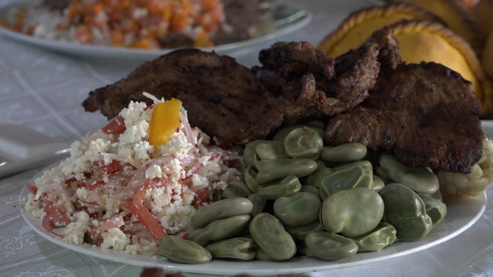
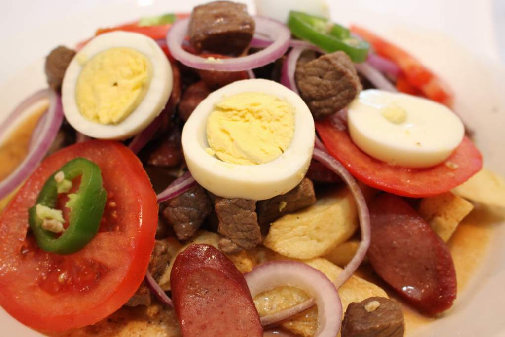

Cochabamba posee una gran variedad de platos típicos, muchos de ellos datan de épocas ancestrales. Otros son relativamente nuevos pero han calado hondo en el gusto de los cochabambinos. Al estar la ciudad en un valle fértil, su suelo privilegiado hace de Cochabamba la Capital Gastronómica de Bolivia. Entre los platos típicos de esta región tenemos al Pampaku, silpancho cochabambino y otros.
Te lo adelantamos: en esta lista no encontrarás Pique Macho, ni Silpancho, ni mucho menos Chicharrón. ¿Por qué? Porque todo el mundo los conoce. Y además no necesariamente demuestran la diversidad y complejidad de la comida del Valle. La «Llajta», corazón de Bolivia, posee muchísima más variedad de comida de la que se podría imaginar. Bien podríamos hacer una lista con más de cincuenta platos, pero como el tiempo es oro, aquí te presentamos 7 platos que demuestran por qué Cochabamba es la capital gastronómica de Bolivia

El Pique Macho es un plato típico boliviano que deleita los paladares con su combinación de sabores y texturas. Originario de Cochabamba, este plato se ha convertido en un símbolo de la gastronomía boliviana.

El silpancho es un plato tradicional de Cochabamba (Bolivia) que contiene arroz y patatas, cubiertos con un filete empanizado decorado con unos huevos fritos encima..
Cochabamba, conocida cariñosamente como la «Ciudad de las Flores», es un destino boliviano que ofrece no solo belleza natural y cultura rica, sino también una deliciosa variedad de comidas típicas que deleitarán tus sentidos. En este artículo, te llevaremos a un viaje culinario por Cochabamba y te presentaremos los platos más emblemáticos de esta región. Desde su historia gastronómica hasta los sabores que no puedes perderte, sumérgete en la riqueza culinaria de Cochabamba.